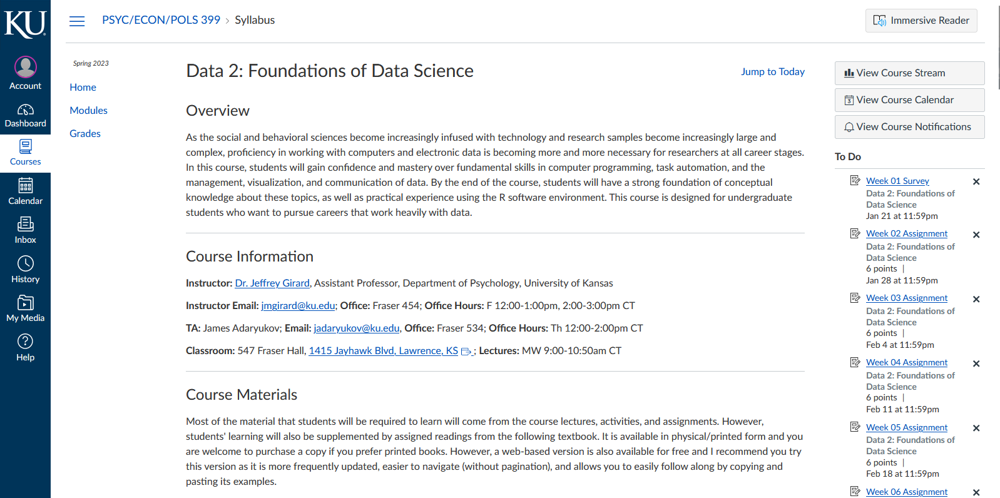
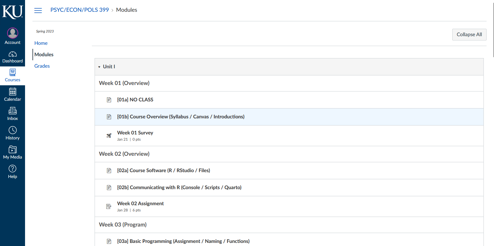
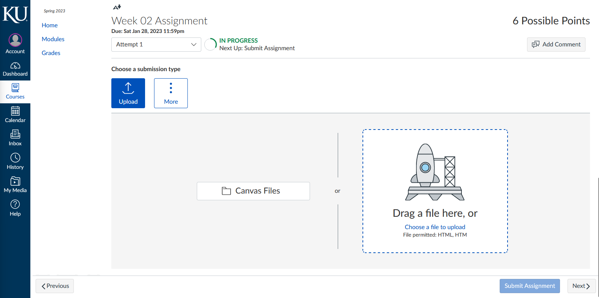
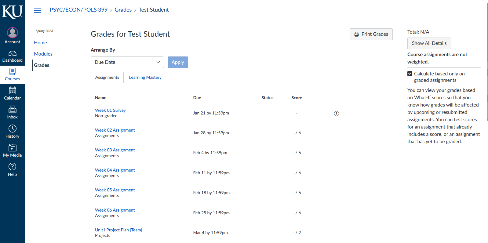
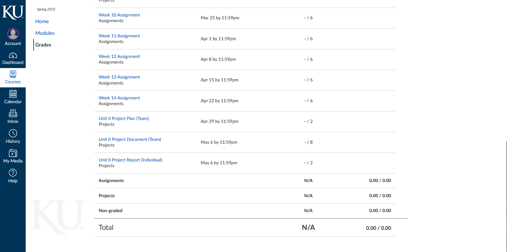

Foundations of
Data Science
Spring 2023 | Course 399/800
Jeffrey M. Girard | Lecture 01b

Roadmap
Syllabus Review
Course Modules
Course Website
Activity
Syllabus Review
Instructor Information
Jeffrey Girard, PhD
affcom.ku.edu/girard
jmgirard@ku.edu
Fraser Hall 454
Background
- Assistant Professor, Department of Psychology
- Brain, Behavior, and Quantitative Science
- Clinical Psychological Science
Research Areas
- Affective Computing
- Psychological Assessment
- Interpersonal Communication
- Applied Statistics and Machine Learning
- Data Science and Software Engineering
Office Hours: Fridays 12:00–1:00pm and 2:00–3:00pm
Teaching Assistant Information
James Adaryukov, MS
behave.ku.edu/people
jadaryukov@ku.edu
Fraser Hall 534
Background
- PhD Student, Department of Psychology
- Brain, Behavior, and Quantitative Science
- Behavioral Science Lab
Research Areas
- Predicting Decision-Making
- Social Information
- Social Pressure
- Natural Language Processing
- Statistics and Data Science
Office Hours: Thursdays 1:00–3:00pm
Course Information
Data 2: Foundations of Data Science
PSYC/POLS/ECON 399 (~20 students)
Undergraduate Certificate in Data Science
Lectures, Activities, and Assignments
Group Projects (basic to intermediate)
Data Science in the Social & Behavioral Sciences
PSYC 792/800 (~10 students)
Graduate Programs in Social/Behavioral Science
Lectures, Activities, and Assignments
Individual Projects (intermediate to advanced)
Learning Objectives
Learn fundamental skills underlying data science
Prepare students for research and industry jobs
Instill a sense of mastery, curiosity, and fun
What you will learn here
Techniques that are widely applicable
Intermediate programming (R, Quarto)
Intermediate wrangling (tidyverse)
Intermediate visualization (ggplot2)
Intermediate data communication
What you won’t learn here
Techniques that are highly specialized
Statistical and machine learning modeling
Web scraping, version control, or SQL
Advanced data science techniques
Advanced data communication
Course Format
Class Meetings (2/week, 20 total)
- Three-part lecture with conceptual intros and live coding
- In-class activity (with answer key) to practice new skills
Homework Assignments (1/week, 10 total)
- Six multi-part questions to apply your new skills
- Demonstrate your understanding in controlled conditions
Unit Projects (1/unit, 2 total)
- Apply your new skills to real-world data you care about
- Challenge yourself to learn new things and specialize
Course Materials
No required textbooks or readings. However, this course was heavily inspired by the following book, which you can access for free online (or pay to order a physical copy):
- R for Data Science (1st Edition) by Wickham & Grolemund
The following texts are where I would recommend you turn after completing this course (or during it, if you are feeling ambitious) to dive into more advanced topics about visualization and programming, respectively.
ggplot2: Elegent graphics for data analysis (3rd Edition) by Wickham
Advanced R (2nd Edition) by Wickham
Grading Policies
Graded Components
60% Homework Assignments (6% each \(\times\) 10)
40% Unit Projects (20% each \(\times\) 2)
Grading Scale
| Letter | A | A− | B+ | B | B− | C+ | C | C− | D+ | D | D− |
|---|---|---|---|---|---|---|---|---|---|---|---|
| G. Points | 4.0 | 3.7 | 3.3 | 3.0 | 2.7 | 2.3 | 2.0 | 1.7 | 1.3 | 1.0 | 0.7 |
| Threshold | 93% | 90% | 87% | 83% | 80% | 77% | 73% | 70% | 67% | 63% | 60% |
Note that I am unlikely to provide extra credit opportunities.
University Policies
Accommodations
- Please contact me and the Student Access Center
Academic Misconduct
Disruption, threatening, cheating, plagiarism, falsification, etc.
May affect students’ grades on specific work and/or overall
Commercial Note-Taking
- Not permitted in any course at University of Kansas
Diversity and Inclusion
- Respect each others’ backgrounds, perspectives, and identities
Course Policies
Attendance
In-person attendance is strongly encouraged but not required
Video recordings will be attempted but cannot be guaranteed
Late Submissions
May receive reduced credit at instructor’s discretion
I prefer high-quality work a day late over poor-quality work on time
Group Projects
Projects will have group and individual components (for 399 only)
Group members may receive different grades (based on contributions)
Course Modules
Unit I Overview
Introduction to R
Basic Programming
Basic Wrangling
Basic Visualization
Basic Communication
Unit I Project
Weeks 1–2
Introduction to Course
[01a]: No Class (Holiday)
[01b]: Course Overview (Syllabus / Modules / Canvas)
Due: Pre-course Survey
Introduction to R
[02a]: Course Software (R / RStudio / Files)
[02b]: Communicating with R (Console / Scripts / Quarto)
Due: Week 02 Assignment
Weeks 3–4
Basic Programming
[03a]: Basic Programming (Assignment / Naming / Functions)
[03b]: More Programming (Vectors / Strings / Packages)
Due: Week 03 Assignment
Basic Wrangling
[04a]: Tidy Data (Principles / Tibbles / Importing)
[04b]: dplyr Basics (Column verbs / Row verbs / Pipelines)
Due: Week 04 Assignment
Weeks 5–6
Basic Visualization
[05a]: ggplot2 Basics (Principles / Scatterplots / Aesthetics)
[05b]: More ggplot2 (Variation / Covariation / Layering)
Due: Week 05 Assignment
Basic Communication
[06a]: Program to Communicate (Style / Comments / Markdown)
[06b]: Visualize to Communicate (Labels / Annotations / Scales)
Due: Week 06 Assignment
Weeks 7–8
Unit I Project
[07a]: In-class planning
[07b]: In-class work
Due: Unit I Project Plan
Unit I Project
[08a]: In-class work
[08b]: In-class work
Due: Unit I Project Document & Report
Unit II Overview
Spring Break
Intermediate Wrangling
Intermediate Visualization
Intermediate Programming
Intermediate Communication (?)
Unit II Project
Weeks 9–10
Spring Break
[09a]: No Class (Break)
[09b]: No Class (Break)
Due: NA
Intermediate Wrangling
[10a]: Summarization (Summarize / Grouped Summarize / Grouped Mutate)
[10b]: Convenience (Tidy Selection / Across / Rowwise)
Due: Week 10 Assignment
Weeks 11–12
Intermediate Wrangling
[11a]: Reshaping Data (Separate / Unite / Pivot)
[11b]: Joining Data (Relational Data / Basic Joins / dplyr Joins)
Due: Week 11 Assignment
Intermediate Visualization
[12a]: Customization (Themes / Layouts / Exporting)
[12b]: Advanced Elements (Facets / Stats / Positions)
Due: Week 12 Assignment
Weeks 13–14
Intermediate Programming
[13a]: Special Data Types (Strings / Factors / Dates and times)
[13b]: Automation (Control Flow / Custom Functions / Iteration)
Due: Week 13 Assignment
Intermediate Communication
[14a]: Presentations (RevealJS) (?)
[14b]: Publications (papaja) (?)
Due: Week 14 Assignment
Weeks 15–16
Unit II Project
[15a]: In-class planning
[15b]: In-class work
Due: Unit II Project Plan
Unit II Project
[16a]: In-class work
[16b]: In-class work
Due: Unit II Project Document & Report
Course Website
Accessing Canvas
Website
Mobile App
Home Page
Shows the course syllabus and a student-specific To Do list

Modules Page
Shows links to each lecture and assignment, organized by unit and week

Submitting Assignments
Upload an HTML file (created using Quarto) for each assignment

Grades Page
Grades on each assignment will be displayed here

Grades Page
Scroll down to see grades per type and overall

Activity
Icebreakers
Break into small groups of 4–5…
What is your preferred name?
What is your year and major / department?
What academic topics and questions excite you?
What career path(s) are you considering?
What was your preferred name again?
Where did you grow up / what is your home town?
What are your non-academic interests / hobbies?
What is your favorite plant or animal and why?
If there’s time, shuffle the groups and repeat.